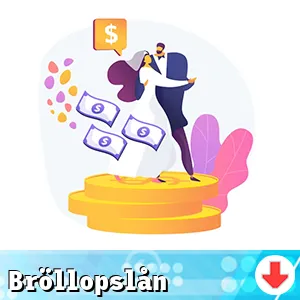

Att överväga ett bröllopslån kan vara en smart strategi för att förverkliga era drömmar om den perfekta bröllopsfesten.
Genom att noggrant utvärdera lån med låga krav och bra lånevillkor kan ni på ett prisvärt sätt finansiera er vigsel och skapa minnen för livet.
Här finns lån som kan användas för att finansiera ett bröllop.

Alternativa lån
Frågor och Svar []
- Långivaren med högst beviljandegrad (exempelränta 9.02 %) för april 2025 är COOP
- Om ni inte kan återbetala ert bröllopslån kan det leda till allvarliga konsekvenser, inklusive negativa effekter på er kreditvärdighet. Långivaren kan börja vidta inkassoåtgärder, vilket kan skapa ytterligare finansiell stress.
- Generellt är det inte rekommenderat att använda ett bröllopslån för att betala av andra skulder, eftersom detta kan leda till en snöbollseffekt av skuldsättning. Det är bättre att utvärdera varje skuld och ta itu med dem separat.
- Er kreditvärdighet påverkar vilka lånealternativ som står till buds och de räntor ni kan erbjudas. En hög kreditpoäng kan ge er bättre villkor, medan en låg poäng kan resultera i högre kostnader och begränsad tillgång till medel.
- Ja, många långivare erbjuder osäkra lån där ni inte behöver ställa några tillgångar som säkerhet. Dessa lån baseras snarare på er kreditvärdighet och inkomst.
- Ja, den flesta långivare har en smidig online-ansökningsprocess för bröllopslån, vilket gör att ni kan ansöka från hemmet. Många låneplattformar erbjuder snabb behandling och beslut om lånet.
- Räntorna för bröllopslån varierar beroende på långivare och er kreditvärdighet. Generellt rör det sig mellan 3% och 15%, så det är viktigt att jämföra olika erbjudanden.
- Ja, det är möjligt att låna mer pengar än vad ni har beräknat för bröllopet, men det rekommenderas inte. Att låna över behov kan leda till onödig skuldbelastning och extra kostnader i form av ränta.
- Utbetalningstiden för ett bröllopslån kan variera, men många långivare erbjuder snabba godkännanden vilket innebär att ni kan få pengarna inom några dagar, ibland till och med inom 24 timmar.
- Bröllopslån kan användas för att täcka en mängd olika kostnader, inklusive lokalhyra, catering, klänningar, dekorationer och fotografering. Genom att tydligt definiera era kostnader kan ni använda lånet mer effektivt.
- Det kan vara fördelaktigt med en medlåntagare om er kreditvärdighet är låg, eftersom detta kan öka chanserna för godkännande och eventuellt ge bättre räntor. En medlåntagare kan förbättra er ansökan.
- Ett snabblån är generellt sett ett kortfristigt lån som snabbt kan ge er pengar, medan ett bröllopslån är ett specifikt syftat lån för att täcka bröllopsrelaterade utgifter. Snabblån har ofta högre räntor än bröllopslån.